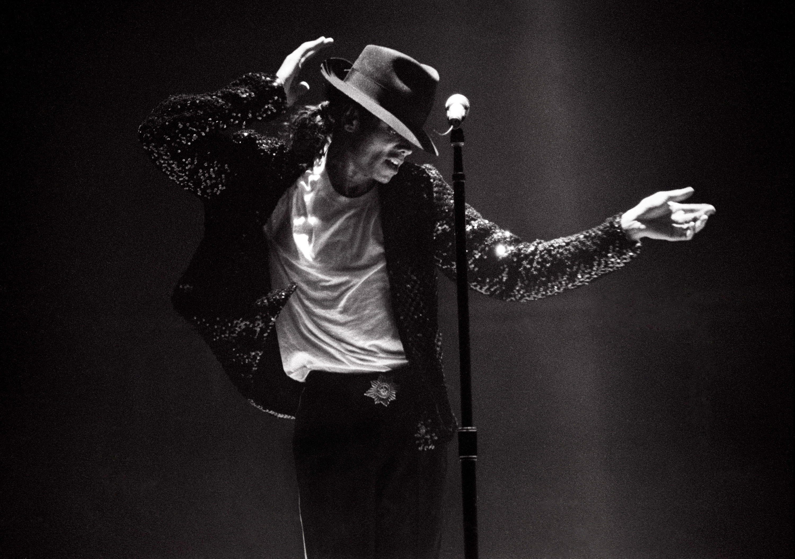
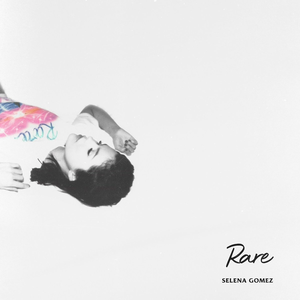
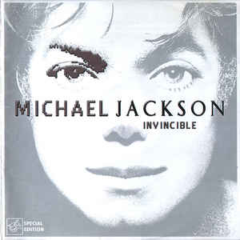
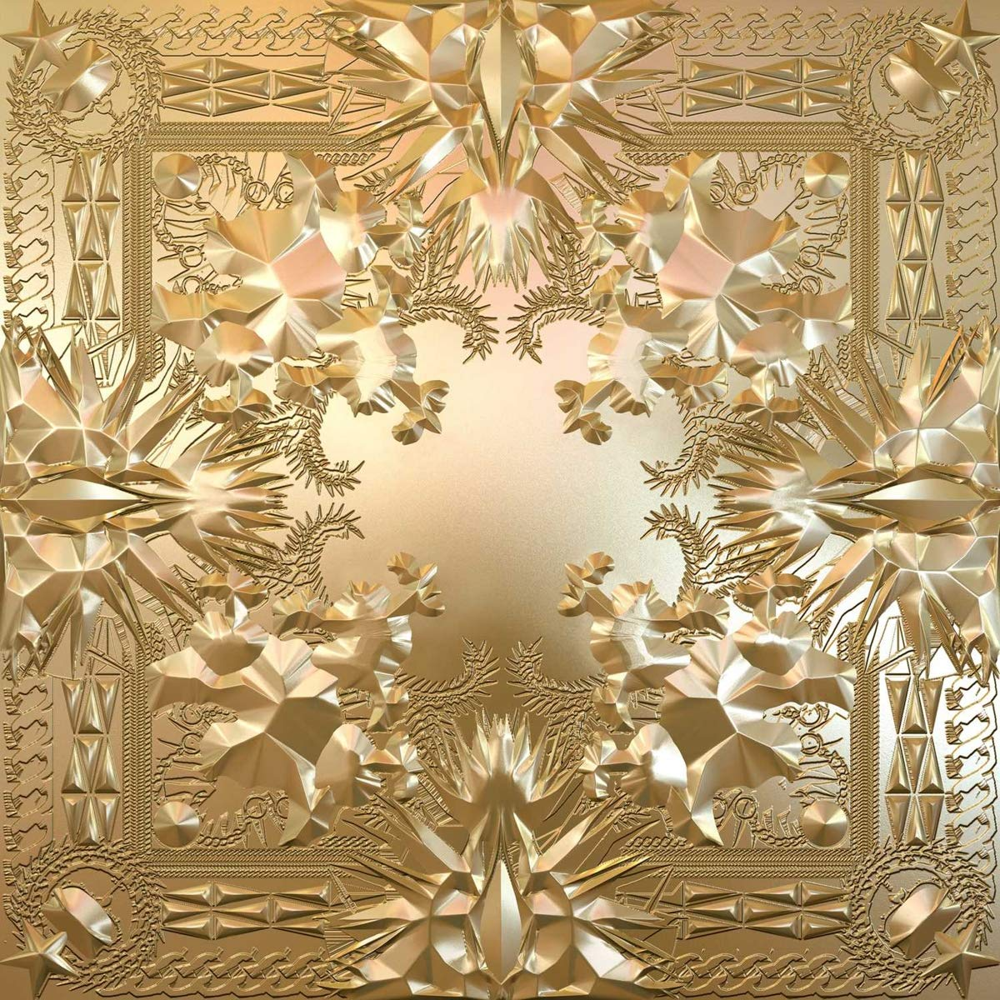

This is a webpage about the history of the music I've listened to, my favorite artists, genres, my musical hobbies, etc.
I was first introduced to music when I was 4 years old. The first genre I was introduced to was pop, and the artist I first listened to from that genre is no other than the King of Pop himself, Michael Jackson.
When I was little, my mom bought CDs of all of his albums, and I used to dance to all of the songs on every album all day and night. I even did the Thriller dance at Chuck E Cheese and took a large crowd by surprise.
I was introduced to hip-hop after listening to the song "All I Do Is Win" by DJ Khaled with my dad in the car. As I listened to more songs with him in the car as the years passed, I was influenced to write hip-hop music too. I wrote a rap about the Charlotte Hornets and performed it in front of my class in middle school, and they loved it.
| Favorite Selena Gomez Song | People You Know |  |
|---|---|---|
| Favorite Michael Jackson Song | There's too many favorites so here's ONE of them |  |
| Favorite Eminem Song | Unaccomodating |
|
| Favorite Drake Song | 4pm In Calabasas | |
| Favorite Meek Mill Song | Dreams and Nightmares |
|
| Favorite Jay-Z Song | Gotta Have It |  |
Email: babyjaceinthispiece@gmail.com
Phone: 704-don't-call-this-number